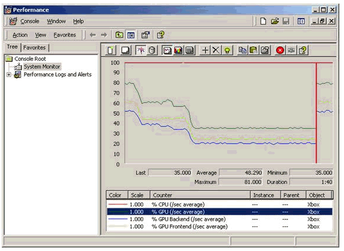

John Harding
Graphics processing on the Xbox® video game system from Microsoft® is a pipeline architecture. That means that the overall processing speed will be determined by the slowest stage in the pipeline. The first stage of the pipeline is the Xbox 733-MHz CPU custom-designed by Intel® Corporation, whose job it is to feed the GPU with objects to render. The second stage is the geometry stage on the Xbox GPU custom-designed by NVIDIA®, consisting of either fixed-function vertex processing or your custom vertex shader. The third stage is the rasterizer, which can be either fixed-function pixel processing or your custom pixel shader.
The three stages are linked by FIFO buffers. The push-buffer, which contains commands for the GPU to execute, links the CPU and geometry stages. The geometry and rasterization stages are linked by a cache of 10 to 20 triangles. Stalls will occur when there is no space for a stage to write into its output buffer, or when there is nothing for it to read from its input buffer.
The basic process for performance tuning is pretty simple:
1. Locate your bottleneck. Is it CPU, geometry processing, or rasterization?
2. Find the problem in that stage. What part of your content or what part of your code is slowing things down?
3. Optimize that part of your scene.
4. Repeat.
We provide some tools that make #1 and #2 a bit easier. The tricky part, #3, is up to you, but we'll discuss some common approaches.
There are a couple things you should do to prepare for tuning your game:
• Set up a profile build of your game. This should consist of a retail build that links with d3d8i.lib instead of d3d8.lib. This library is like the retail d3d8.lib except that it includes performance counters for monitoring GPU usage.
• Include <d3d8perf.h> in your profile build. This header file defines a number of structures, constants, and functions used for performance tuning.
• Don't lock your game to the frame rate, because that will stall the pipeline. To do this, specify d3dpp.FullScreen_PresentationInterval = D3DPRESENT_INTERVAL_IMMEDIATE;
• Use D3DPERF_GetStatistics() to get a pointer to the performance counter structure of Microsoft® Direct3D®. This structure contains statistics and parameters for controlling performance counter operation.
• Measure milliseconds per frame (ms/f) rather than frames per second (fps) when monitoring performance. A 4-fps improvement would be great if your game was running at 2 fps before; if your game was running at 100 fps, it wouldn't be such a big deal. However, it's clear how big a speed-up 6 ms/f is, no matter what your frame rate.
• Add options for controlling the rendering of your scene. That way, you can experiment with different configurations at run-time without recompiling.
There are several tools that can help you locate your bottleneck. The first is an option to emulate an infinitely fast GPU. If your game doesn't speed up with an infinitely fast GPU, then GPU processing is not your bottleneck, and you should concentrate on the CPU. This emulation is enabled by setting the global variable D3D__NullHardware to TRUE (unfortunately, changing back to FALSE is not supported; you might be able to get away with it, but don't count on it). Note that the CPU still sends commands to the GPU via the push-buffer; the GPU just doesnt ever execute them.
#include <d3d8.h>
CMyGame::Initialize()
{
//
// Game initialization code
//
// Emulate infinitely fast GPU
D3D__NullHardware = TRUE;
}
The Xbox Direct3D library can also sample the GPU to determine how it's spending its time. There are several ways to monitor these GPU statistics. The first is by running the Remote Performance Monitor Tool (xbperfmon) on your development system. In xbperfmon, the Xbox performance object contains counters for percent CPU usage, percent GPU usage, percent GPU FrontEnd usage (geometry), and percent GPU BackEnd usage (rasterizing). To pick up the GPU statistics, you'll need to call DmEnableGPUCounter(TRUE) in your game's initialization and link with xbdm.lib. The nice thing about using xbperfmon is that it will graph the history of CPU/GPU usage:

Figure 1. xbperfmon showing 100-percent CPU usage
Another way of getting the same GPU statistics is to have Direct3D dump them to the debug output. Calling D3DPERF_SetShowFrameRateInterval(dwMilliseconds) will tell Direct3D to display statistics on the debug channel at the specified interval. The default output looks like the following:
fps: 24.1 (41.4 ms/frame) frames: 121 time: 5016ms
Min/max frame times: frame #89=32ms frame #96=46ms
OBJECTLOCK_WAITS (121): 521.2ms (4.3ms/wait 4.3ms/frame)
Vertices processed: 2495838 verts (20626 verts/frame)
PushBuffer writes: 123517384 bytes (1020804 bytes/frame)
Available RAM: 97280 kbytes
Interrupts: 7358
Context Switches: 234
The amount of information displayed can be controlled by changing D3DPERF_GetStatistics()->m_dwDumpFPSInfoMask. To get the GPU profile data, you'll need to OR in D3DPERF_DUMP_FPS_PERFPROFILE:
D3DPERF_GetStatistics()->m_dwDumpFPSInfoMask |= D3DPERF_DUMP_FPS_PERFPROFILE;
This will add the following output:
gpu: 28374 (68%)
frontend: 21618 (52%)
backend: 18472 (44%)
total samples: 41268
Regardless of how you get the statistics on CPU/GPU usage, you want to look for which stage has the highest utilization. For example, the xbperfmon graph above shows a situation where CPU usage was steady at 100 percent, which indicates that the CPU is the bottleneck. Because the GPU usage is determined by sampling, it is not always entirely accurate. It's usually a good idea to confirm GPU bottlenecks experimentally as described below. Also, you may have different bottlenecks in different parts of a frame. The experimental process below can then be used to find out which stages have bottlenecks.
It's important to look for lines similar to the OBJECTLOCK_WAITS line in the sample output above. These messages indicate that the CPU had to stall; we'll cover stalls in more detail later when talking about CPU bottlenecks.
Another method of locating your bottleneck is to either simplify or add a small amount of complexity to a stage and check if it affects performance. If you remove your physics engine and collision detection, and your game speeds up, that indicates that the game is CPU bound. Conversely, if you add several instructions to your vertex shaders and the performance doesn't change, your game is not geometry bound. Try rendering to a smaller viewport; if that speeds up your game, that points to a bottleneck in the rasterization stage.
Once you've determined which stage is the bottleneck, the next step is to find out what is causing the bottleneck in that stage. The simplest way to do this is to add or remove complexity and note the time change. For example, the new Dolphin sample included with the XDK runs at about 3.2 ms/f and appears to be geometry bound. If we remove the rendering of the dolphin, it speeds up to about 3.1 ms/f. On the other hand, if we remove the sea floor, it speeds up to 0.7 ms/f. Because we're spending only 0.1 ms/f on the dolphin but 2.5 ms/f on the sea floor, our efforts would be best spent on the sea floor.
You can use a similar technique for timing the rasterization of different parts of your scene. For timing CPU usage, you can add your own timing code to your routines or use Intel Vtune to profile your game.
Once you've found the specific problem, it is often helpful to temporarily disable other parts of the game. This cuts down on variance in your timing measurements and makes it easier to focus on the problem at hand.
Now that you've found the part of your code or content that's causing your bottleneck, what do you do about it? While there aren't all-purpose solutions that will work for every game, we can go over the general approach for each type of bottleneck.
In the case of a geometry bottleneck, too much time is being spent processing vertices. You can actually calculate how much time geometry processing is going to take:
Vertices/frame * cycles/vertex = cycles/frame
You can determine the number of vertices per frame by running your model through a vertex cache emulator. The vertex cache emulator will estimate how many vertices will actually need to be shaded to render the model. The MakeXBG tool can run meshes through the vertex cache emulator as part of the triangle-stripping process; the result is reported as Num cache misses. Cycles per frame can be found in the listing file generated when you assemble your vertex shader. Be aware that up through the August Preview release of the XDK, the vertex shader assembler did not properly account for the dual vertex shader processors, so the cycles/vertex would be off by a factor of 2.
From this formula, we can see that we have two options for speeding up the geometry stage:
1. Shade fewer vertices
2. Spend less time on each vertex
There are a couple ways to achieve the first goal of shading fewer vertices. The simplest is just to use fewer vertices. Oftentimes, models can be simplified with little or no visual quality loss. You may just want to run a sanity check on your models and make sure the polygon count is reasonable.
The other way is to get better vertex cache utilization. You can check your vertex cache utilization by disabling the vertex cache and checking the impact on performance. If your game doesn't slow down with the vertex cache disabled, you're not getting very good cache utilization. For example, the Dolphin sample slowed down from 3.2 ms/f to 5.5 ms/f when the vertex cache was disabled. To disable the vertex cache, call
D3DPERF_SetState( D3DPERFSTATE_VTX_ALL, 0 );
To improve your cache utilization, you need to optimize your mesh for the Xbox GPU. The first step is to ensure that you are using indexed primitives, which can achieve much better cache utilization than non-indexed primitives. Other suggestions can be found in the Xbox Vertex Performance and Xbox Transform and Lighting Data Flow white papers.
Option #2 above is to spend less time shading each vertex. Some possibilities for doing this:
• Optimize the vertex shader. The assembler does a pretty good job of optimizing vertex shaders, but you may be able to do better by hand-optimizing. This is an iterative process; if you do find some optimizations, run it through the assembler again, and then hand optimize again. For more details on optimizing vertex shader programs, see the Understanding the Xbox Vertex Shader Processor white paper.
• Simplify the vertex shader. You may be able to simplify or remove certain effects from your vertex shader.
• Offload some vertex processing to the CPU. Just because the Xbox GPU can do geometry processing doesnt mean it has to. It's important to note that this will put additional load on the CPU stage as well as consume more memory bandwidth.
In the case of the Dolphin sample, which is vertex bound by the drawing of the sea floor, we have several options. First, the CPU utilization is very low, so we could move some of the vertex processing back to the CPU. Second, we're drawing the entire sea floor mesh, even though only a small segment of it is visible. Through application occlusion culling and frustum culling, we should be able to get rid of a lot of vertices. Another option would be to use level-of-detail (LOD) techniques for simplifying distant parts of the mesh.
Rasterization bottlenecks are often caused by memory bandwidth limitations rather than by the speed of the pixel shader. The first step in analyzing a rasterizer bottleneck is to confirm whether the limiting factor is your pixel shader computation speed or bandwidth. This can be determined pretty easily by using NULL textures: if your game speeds up, then your bottleneck is memory bandwidth rather than pixel shaders.
There are several options for decreasing bandwidth utilization. The main area to focus on is texture usage, because textures are the largest bandwidth consumers in the system.
• Try using compressed or palletized textures, if you are not already. DXT1-compressed textures use only 4 bits per pixel; DXT2 to 5 use 8 bits per pixel. Some images compress better than others, so the best bet is just to try it out. The bundler tool can be used to create high-quality compressed textures. Palletized textures also consume less memory, but they have different quality tradeoffs than compressed textures.
• Make sure you're using mipmaps if there's any chance the texture will be minified.
• You may be able to use 8- or 16-bit textures in situations where less precision is needed (normal maps, light maps, and so on).
• Use smaller textures, particularly for objects that don't greatly contribute to the visual impact of the scene (smaller or distant objects).
• Try using bilinear instead of trilinear filtering.
• Use swizzled textures for non-screen-aligned primitives. Linear textures work well for screen-aligned primitives but should be rotated 90 degrees.
• Three-D textures are inherently slower than 2D textures, even when using only 2D slices.
• Avoid random texture access when possible, because it scatters memory access across more pages.
Other possibilities for cutting down on memory bandwidth usage:
Alpha blending and z-buffer read/writes can consume a fair amount of bandwidth as well—disable them when not needed.
Render front to back when possible to take maximum advantage of occlusion culling.
• Try using compressed vertices. This will cut down on your memory bandwidth usage as well as on your memory footprint.
• You can use visibility testing (Begin/EndVisibilityTest() and GetVisibilityTestResult()) to measure the number of pixels rendered.
If the pixel shader itself is the bottleneck, then you may need to optimize or simplify your pixel shader. The pixel shader is also a pipeline, with two key stages: texture address operations and combiner stages. The Xbox Pixel Shader Performance white paper described that every two combiner stages used adds one cycle per pixel to the processing time. However, it turns out that some complex texture addressing operations (such as texm3x3spec and texm3x3diff) run slower (sometimes much slower) than described in that white paper. Also, how texture address operations are grouped together in a pixel shader can have an impact on performance. Both of these issues will be covered in more detail in a future white paper.
You will need to determine whether the bottleneck within the pixel shader pipeline is texture addressing operations or combiners, and then optimize that part of your shader accordingly.
CPU bottlenecks are generally going to be very specific to your game—there's no quick solution for everyones problem. VTune can help you analyze your CPU usage, and adding your own performance analysis code can help as well.
When we enabled frame-rate output of Direct3D above, we got the following message:
OBJECTLOCK_WAITS (121): 521.2ms (4.3ms/wait 4.3ms/frame)
Any message like this means that the CPU is stalling, and these should definitely be examined if you are CPU bound. The stalls that Direct3D tracks are as follows:
• OBJECTLOCK_WAITS – This CPU stalled because it was trying to lock a resource that the GPU was currently using. Consider double buffering or using the Begin/End API to avoid these stalls.
• PUSHBUFFER_WAITS – The CPU stalled because there was no more room in the push-buffer. This would usually happen if the game is GPU bound or if the push-buffer is too small.
• PRESENT_WAITS – The CPU stalled when calling Present() because the CPU has gotten too far ahead of the GPU (three frames ahead, as of this writing), indicating a GPU bottleneck.
• BLOCKUNTILIDLE_WAITS – The CPU stalled due to a BlockUntilIdle() call.
• BLOCKUNTILVERTICALBLANK_WAITS – The CPU stalled due to a BlockUntilVerticalBlank() call. Note that there is one implicit BlockUntilVerticalBlank() when your game starts up.
• BLOCKONFENCE_WAITS – The CPU stalled due to a BlockOnFence() call.
Note that one CPU stall may hide another. You might get rid of your OBJECTLOCK_WAITS, only to stall just as long in PRESENT_WAITS. It's important to determine the real source of stalls to avoid wasting time optimizing the wrong parts of your game. To do this, remove the code causing the stall and see if the stall time is eliminated or just moves to a different location.
One common CPU bottleneck worth mentioning is copying indices into the push-buffer. This will show up on a VTune profile as D3DDevice_DrawIndexedVertices. Index Buffers are not native GPU resources, so whenever an indexed primitive is drawn, the indices are copied into the push-buffer. For a large primitive, this can take a substantial amount of time. One solution to this problem is to use static push-buffers (see the PushBuffer sample in the XDK), which don't require the copy.
When optimizing a pipeline, it's important to periodically check your progress and make sure you're working on the right thing. As you speed up one stage, the bottleneck will move to another stage in the pipeline. Over-optimizing one stage won't gain you any performance and can cost you a great deal of time.
Eventually, you will get to a point where either your game is fast enough or there are no more compromises you are willing to make. At this point, there is another benefit to your bottleneck analysis. You can add complexity to the other stages of the pipeline without affecting overall performance. For example, if your game is CPU bound, you can add effects to your vertex shaders and pixel shaders without slowing your game down.
There's a lot more functionality to the Direct3D performance counters than we've discussed here. While these functions are documented in the Xbox SDK Help, it's worth mentioning a few that you may not be aware of:
• API counters. The D3DPERF structure returned by D3DPERF_GetStatistics() collects statistics on how often various APIs are called, as well as how many times certain APIs are called redundantly. This can save you from implementing the same counters in your game code.
• RenderState overrides. When analyzing your game, it can be helpful to override certain SetRenderState() calls. Rather than hunt through your code for every RenderState change, you can keep a list of states to override in D3DPERF_GetStatstics()->m_RenderStateOverrides. Youll need to #define D3DCOMPILE_NOTINLINE in either a global header or your project settings to make this work. This will slow down calls to SetRenderState(), so it may impact performance if your game is CPU bound.
• Customizability. You can specify your own callback routines to be called for displaying frame rate info or to be called when a certain wait time threshold has been hit (such as an object lock wait). To do this, just change D3DPERF_GetStatistics()->m_pfnDumpframeRateInfoHandler or D3DPERF_GetStatistics()->m_pfnCycleThresholdHandler to point to your routines.
If there is more functionality youd like to see in the Direct3D performance counters, please send an e-mail message to xboxds@xbox.com.